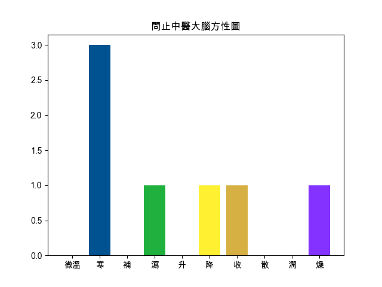

回上頁
【三黃瀉心湯】
出處
金匱要略
功用
瀉火消痞。
應用
心胃火熾，迫血妄行，以致吐衄、便秘，或三焦積熱，目赤口瘡或外科癰腫屬於熱毒熾盛者。
組成
● 大黃 : 瀉下攻積，清熱瀉火，止血，解毒，活血祛瘀，清瀉濕熱
● 黃連 : 清熱燥濕，瀉火解毒
● 黃芩 : 清熱燥濕，瀉火解毒，止血，安胎
便秘
口腔發炎
牙痛
眼睛紅_眼底出血
眼睛充血
失眠
中風
眩暈
出血
【組成方劑的單味藥藥性表】
-
溫熱藥
平藥
寒涼藥
補藥
平藥
瀉藥
大黃☀ ,黃連☀ ,黃芩☀
-
升性藥
平藥
降性藥
散性藥
平藥
收性藥
大黃☀ ,黃連☀ ,黃芩☀
